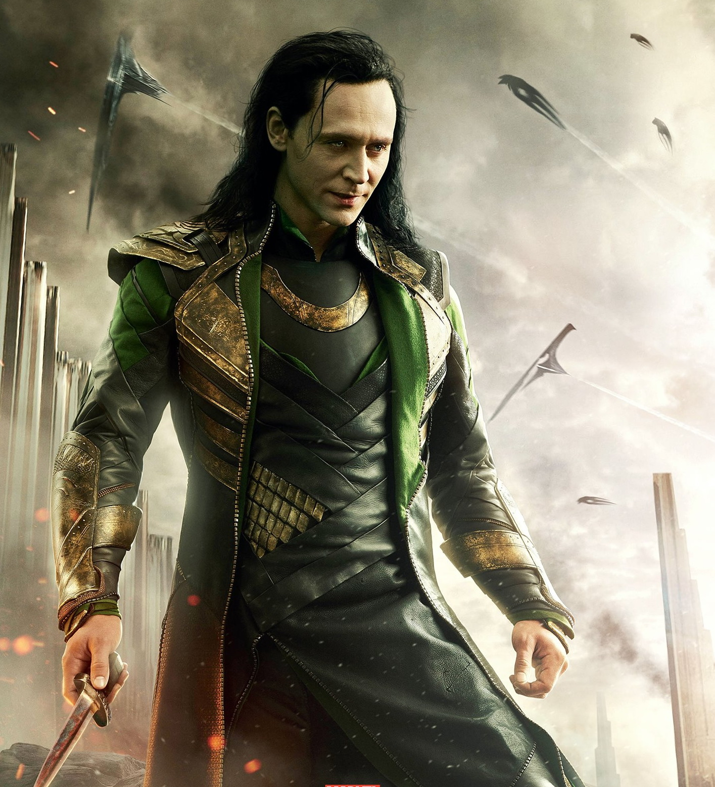
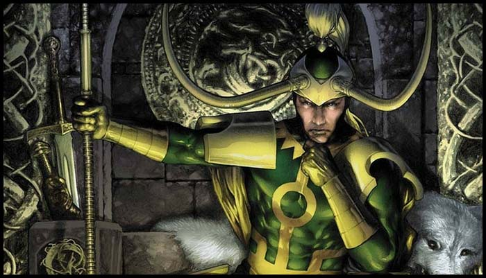

То́мас Ві́льям Гі́ддлстон (англ. Thomas William Hiddleston; нар. 9 лютого 1981 року, Лондон, Велика Британія) — англійський актор. У 2011 зіграв роль Локі у фільмі «Тор».
Народився 9 лютого 1981 р. у Вестмінстері (Лондон, Велика Британія). Він навчався у школі Дракона в Оксфорді та в Ітонському коледжі поблизу Віндзора у Беркширі, де жив у домі Дурнфорд. У Кембриджі, де він теж отримував освіту, Том брав участь у постановці «Трамвай „Бажання“». У 2005 р. Гіддлстон закінчив престижну Королівську академію драматичного мистецтва.
Свою першу роль Том виконав у телефільмі «Життя і пригоди Ніколаса Нікльбі» (2001). Його наступні роботи теж були пов'язані з телебаченням: «Змова» (2001), «Черчіль» (2002) з Альбертом Фінні та Ванесою Редгрейв, «Загадка сонетів Шекспіра» (2005), кілька серіалів.
Першу велику роль актор також зіграв у телефільмі — в «Міс Остін шкодує» (2007). У 2008 р. Гіддлстона номінували на премію Лоренса Олів'є у категорії «Найкращий дебют», і він отримав цю нагороду. Запрошення від компанії «Марвел» стало для Тома великим проривом на кіноекран.
Локі (англ. Loki) - персонаж всесвіту Marvel, створений на основі скандинавського бога Локі, зведений брат Тора. У різні періоди виступає як в ролі суперлиходія (протистоїть Тору і Месників), так і супергероя (учасник команди Могутніх Месників, особиста серія коміксів «Локі: воїн Асгарда»).
Том Хіддлстон грає персонажа у фільмах Кінематографічної всесвіту Marvel: «Тор» (2011), «Месники» (2012), «Тор 2: Царство темряви» (2013), «Тор: Рагнарек» (2017), «Месники: Війна нескінченності» (2018), «Месники: Фінал» (2019), а також в серіалі на Disney + «Локі» (2021).
Вперше персонаж Локі з'явився в коміксі «Venus # 6» (серпень, 1949 рік), де він був неточно представлений як олімпійський бог, засланий в Тартар. Перше його офіційна поява відбулося в коміксі «Journey into Mystery # 85» (жовтень 1962), де він був повторно введений братами Стеном Лі та Ларрі Либером і перероблений Джеком Кірбі. Також Локі з'являвся в різних номерах коміксів «Journey into Mystery», «Тор», «Месники» і кількох інших серіях.
В результаті видавництво Марвел знайшло персонажа досить популярним, щоб дозволити Роберту Роді продовжити створення міні-серії Loki # 1-4 (липень 2004 - жовтень 2004), яка надає можливість інакше поглянути на героя. Особливостями міні-серії були створені художником Есад Рібіком обкладинки і внутрішні сторінки коміксів.